{kind=link}
{kind=link}
{kind=link}
This enclosed step stool provides a platform to raise children to the height of a counter top, so they can observe and participate in kitchen activities. The adjustable platform and front step allow the tower to adapt as a child grows.
All parts are made from stock of the same thickness. If you are building this for a standard-height counter (36 inches in the US, or 90 cm. elsewhere), and easy way to acquire the material is to shop in the shelving section of your local home improvement store. They are likely to have hardwood shelving panels 36-by-18 in., or 90-by-45 cm. Three of these will accomodate all parts: one for each side, and one for the platforms and other cross members. A good secondary option is 48-by-24 in. (120-by-60 cm.) "handy panels" of good-quality 3/4 in. (1.9 cm.) plywood.
Building Instructions
Making the Ends
Step 1: Cut the panels to size
{kind=link}
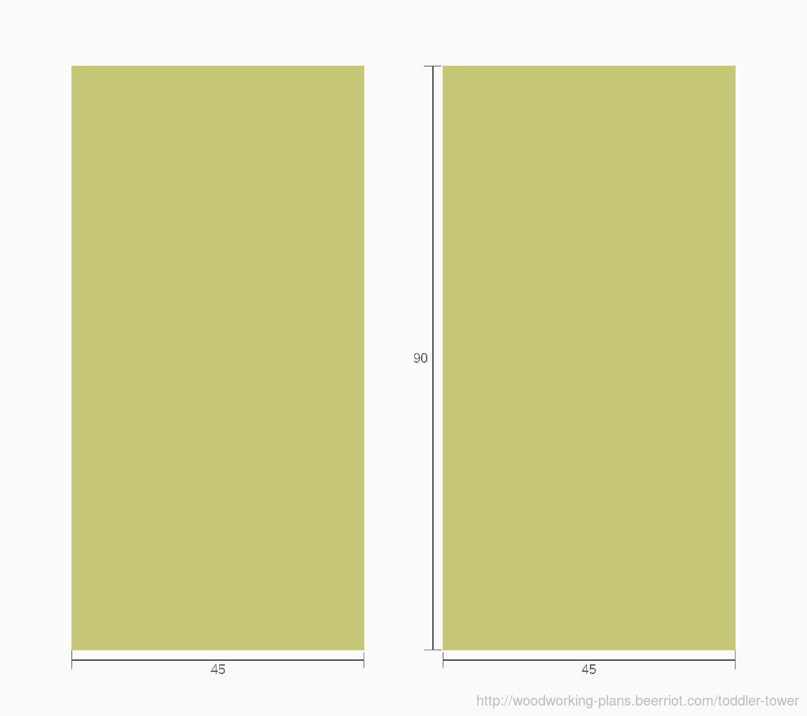
Start by cutting two panels to 90cm by 45cm. Ensure that the 90cm dimension runs with the grain of the wood. When the tower is standing upright, the grain of the wood should run vertically.
If your panels came labeled as this size from the store, check that they are cut square and to exactly matching size.
Step 2: Cut dados for the platform and step
{kind=link}
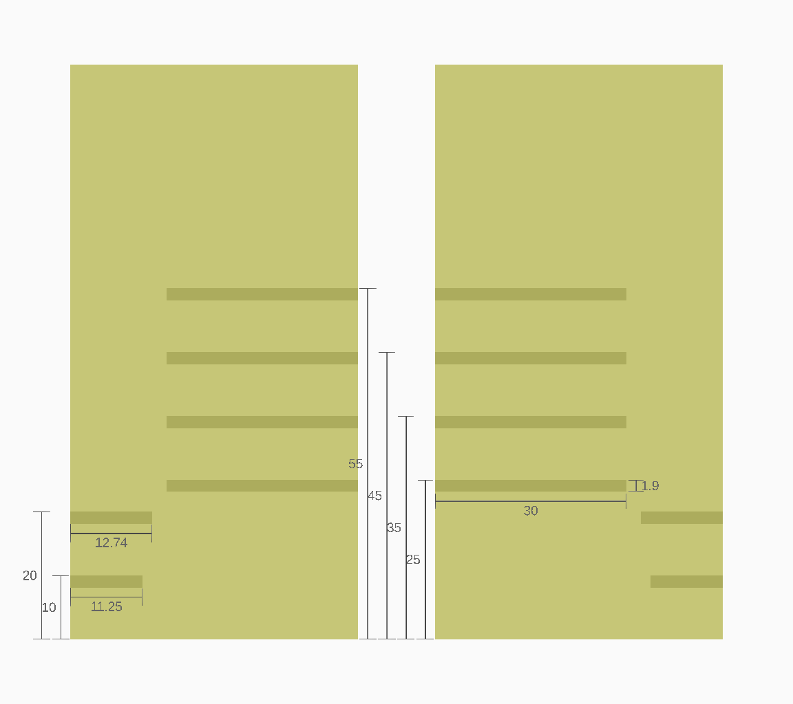
The most important cuts in this build are the dados into which the platform and step fit. If the dados in the left side don't align with the dados in the right, the tower won't stand straight, or the platform may not even fit. So, make those cuts while the stock still has plenty of square side from which to reference.
The dados should be at least as wide as the stock you're using (1.9cm). If you cut them just a half millimeter or so wider (1.95cm), the platform will slide in and out more easily.
The dados should be 0.48cm deep to give a good ledge to support the platform and step, without creating a weak spot in the side.
The platform slides in from the cabinet side of the tower. Make sure to cut these 30cm long dados from the right side of one panel, and from the left side of the other. The top edge of the dados should be at from the bottom edge.
The step slides into its 11.25cm dado from the opposite side of each panel. These dados should be at from the bottom edge.
If you accidentally cut all platform dados from the same side of each panel, or you don't want to deal with squaring off the inner end of the dado, it's completely fine to continue cutting all the way through to the other side. A stopped dado, as designed, provides a nice positive feedback when inserting the platform, but it's not necessary for the tower to function.
Step 3: Cut rabbets and grooves for the cross-member supports
{kind=link}
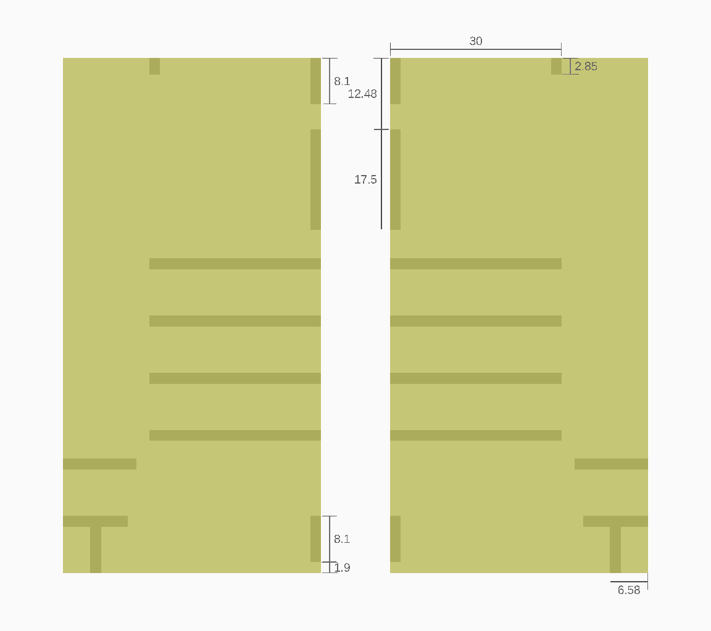
Next cut rabbets and grooves for the permanently-fixed support members. All rabbets and grooves are 0.48cm deep and 1.9cm wide, like the platform and step dados. But, since these pieces don't need to slide, keepthing the width and length of these recesses to the exact dimensions of the pieces that will fit in them, is a good idea.
Along the cabinet edge, cut a rabbet 8.1cm long, starting at the top edge. Also cut a rabbet 8.1cm long, starting 1.9cm up from the bottom edge. Finally, cut a rabbet 17.5cm long starting 21.875cm from the top edge.
Cut a groove from the bottom edge through the lower wall of the lowest front step dado, exactly in the middle of that dado. Also cut a groove 2.85cm long starting at the top edge, with the edge farthest from the cabinet side being 30cm from the cabinet side.
Step 4: Cut the front at a ladder angle.
{kind=link}
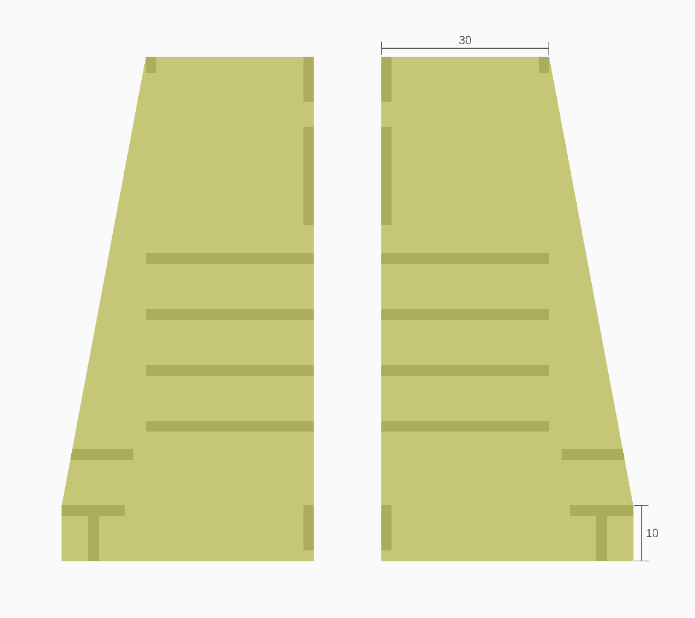
Draw a line from the top outer corner of the lowest step dado, to the top outer corner of the safety rail. Cut along this line, and discard the triangle offcut.
Step 5: Cut out holes for handholds.
{kind=link}
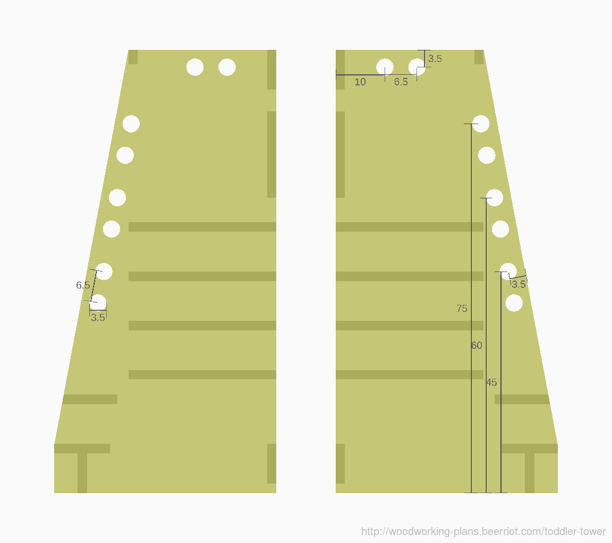
Start the handholds by marking points 3.5cm from the angled edge cut in Step 4, and up from the bottom edge. Next, marking another point, also 3.5cm from the angle edge, and 10cm below each of the first points.
If you have a hole saw, drill a 3.5cm hole at each point you just marked. If you don't have a hole saw, use a compass to draw a 1.75cm radius circle at each point, then drill the larges hole you can with whatever bit you have smaller than that circle at the center point.
Repeat this process for one more handhold along the top edge. Place the first point at 10cm from the cabinet-side edge, 3.5cm down from the top edge. Place the second point an additional 10cm from the front edge.
{kind=link}
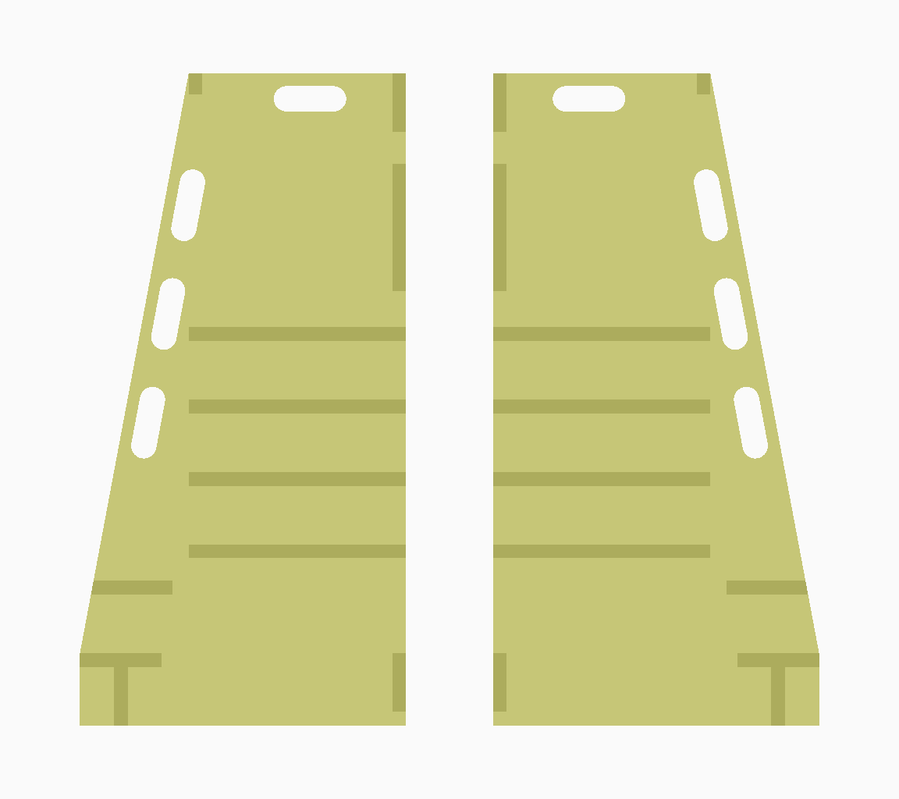
To finish the handholds, lay a straightedge against the edges of each pair of circles, and draw a line from one to the other. Saw long these lines and remove the waste. You may need to use a rasp or sandpaper to even the last bit of material where the flat meets the edge of the circle.
To make the handholds more comfortable, round or chamfer the edges. If you have a router with a roundover bit or chamfering bit, this should be quick work. If you don't, a rasp or coarse sandpaper will be effective.
Step 6: Cut windows (optional).
{kind=link}
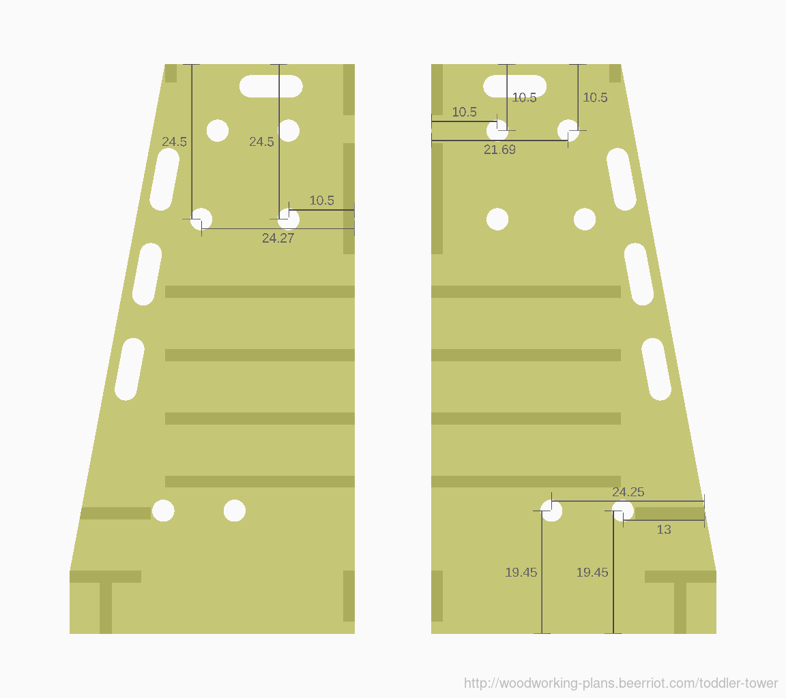
The windows in the top and bottom of the unit are optional. The top one removes a bit of weight from the unit, and helps to lower the center of gravity. The bottom one also removes weight, and makes it less likely that unevenness in the floor will cause the tower to rock.
The process for making the windows is similar to the process for making the handholds. Start the upper window by making a mark 10.5cm down from the top edge, and in the same distance from the cabinet edge. Make a second mark also 10.5cm down from the top edge, but 11.19cm farther from the cabinet edge (21.69cm from the cabinet edge in total). Make a third mark 10.5cm in from the cabinet edge, but 14cm below the first mark (24.5cm total from the top edge). Make your final mark the same distance from the top edge, but 13.77cm farther from the cabinet edge (24.27cm total). Drill holes at each mark.
Start the bottom window by making a mark 19.45cm from the bottom edge, and 13.0cm from the angled edge at that height. Mark a second point at the same distance from the bottom edge, and 11.25cm farther in from the front angled edge. Drill at each mark. (The lower corners of this window are not rounded, so they don't need drilling.)
{kind=link}
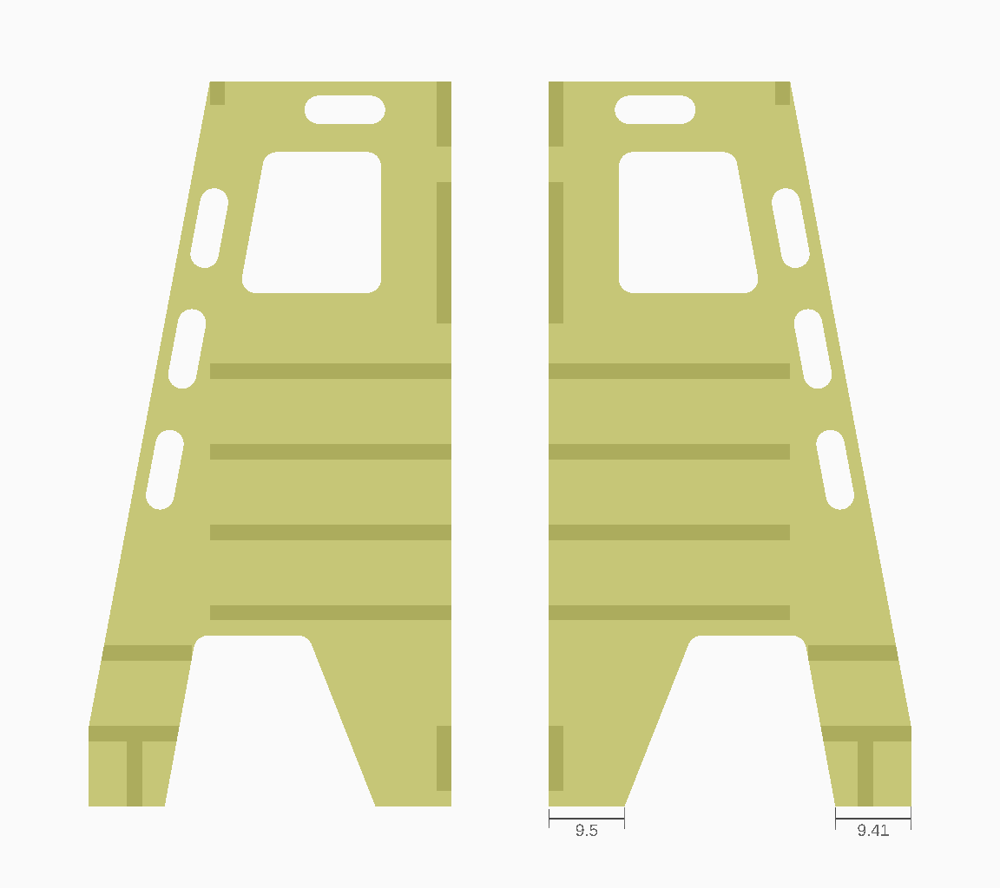
Using a straightedge, draw lines between the top edges of the top circles, the bottom edges of the bottom cricle, the right edges of the right circles, and the left edges of the left circles, of the top window. Saw along these lines, and discard the material that comes out of the center.
Make a mark on the bottom edge of the panel 9.41cm from the non-cabinet corner. Make a second mark 9.5cm from the cabinet-side corner. using a straightedge, connect the first point to the right side of the right circle above it, connect the second point to the left side of the left circle, and finally connect the top edges of the circles. Saw along these lines, and discard the trapezoid that comes off.
Round or chamfer the edges of these windows, like you did the handholds. Also round or chamfer the outer edges of each panel. The side panels are now complete, except for some screw and bolt holes we'll get to later.
Making the Cross Members
Step 7: Cut the Platform, Step, and other Supports
{kind=link}
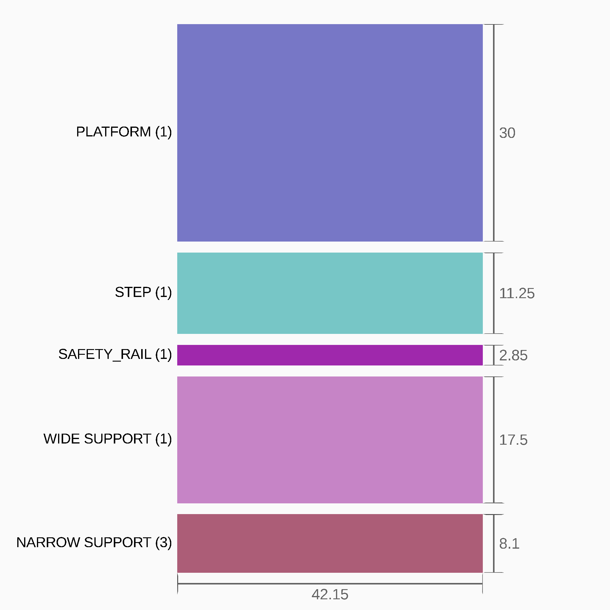
The rest of the pieces of the tower should be cut so that the grain of the wood runs from left to right across the width of the tower. In this dimension, they're all the same length: 42.15cm. If you're using a saw that has any sort of gauge or stop, it may make sense to set the guide to that length and cut enough pieces to make the rest of the following components:
- (1) Platform: 30cm by 42.15cm
- (1) Front step: 11.25cm by 42.15cm
- (1) Safety rail: 2.85cm by 42.15cm
- (1) Wide support: 17.5cm by 42.15cm
- (3) Narrow supports: 8.1cm by 42.15cm
The curve on the platform and the front step is an optional feature. It gives the piece a little more of a finished look and feel, and also provides both a slightly deeper step and a little more room to climb under the safety rail. I recommend not going too deep with the curve - if the center is about one board thickness back, that's about right.
Tip: notice how the convex curve of the step matches the concave curve of the platform. If you cut a panel 41.25cm by 42.15cm - the combined size of the step plus the platform - you can form that edge of both pieces by cutting the curve at 11.25cm through your combined panel.
Assembly
Step 8: Drill holes for the bolts and threaded inserts.
The platform and the front step are attached with bolts that feed through the side panels and screw into threaded inserts that are embedded in the platform and front step. Find a drill bit that matches the outer diameter of the barrel of your threaded inserts (at the base, not the tip, of the threads) - in the diagrams here, that's 0mm. Use this bit to drill the holes both in the platform and the step, as well as through the sides. This will make a larger hole than you need for the bolt to pass through the sides, but that will make it easier to align during installation.
{kind=link}
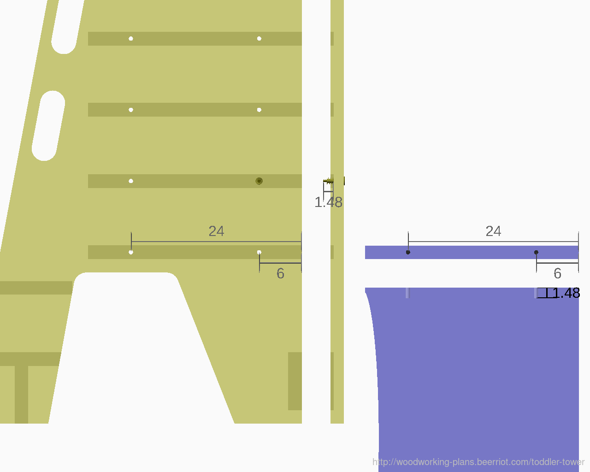
In each platform dado in each side panel, drill a hole centered top-to-bottom in the dado, 6cm from the cabinet-side (open end) of the dado. Drill another 24cm from the same side.
Pass one of your platform bolts through one of the holes, and screw a threaded insert onto it, until the threaded insert touches the bottom of the dado. Do not tighten it - you'll be taking it off again in a moment. Measure the distance from the bottom of the dado to the end of the threaded insert, or to the end of the bolt if the bolt sticks through. Remember this measurement - it's how deep the holes in the platform and the front step need to be. Remove the threaded insert and the bolt from the side panel.
Drill holes in both ends of the platform, centered in the thickness. Just like the holes in the side panels, one in each end should be 6cm from the cabinet-side edge, and the other should be 24cm from the same edge. The depth of these holes should be the measurement you just made a moment ago.
If you added the curve to the front of the platform, make sure you're measuring from the flat edge. The bolt positions given here are symmetrical, but using the same reference edge for all measurements helps ensure everything lines up better.
{kind=link}
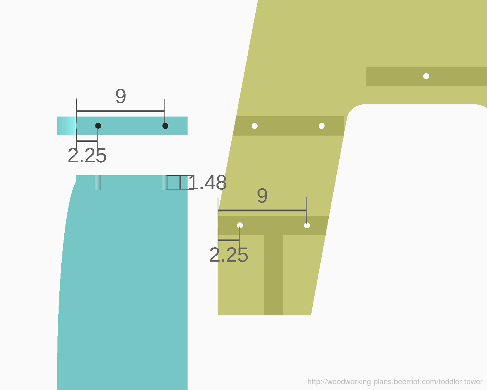
In each step dado in each side panel, drill a hole centered top-to-bottom in the dado, 2.25cm from the non-cabinet-side (the same side as the angled cut) of the dado. Drill another 9cm from the same side.
Drill holes in both ends of the step, centered in the thickness. Just like the holes in the side panels, one in each end should be 2.25cm from the non-cabinet-side edge, and the other should be 9cm from the same edge. The depth of these holes should be the measurement you made earlier.
If you added the curve to the front of the step, make sure the curve is facing away from the platform while measuring for the bolt holes. The curve should stick out away from the cabinets in the final assembly.
Step 9: Attach the cross-member supports.
{kind=link}
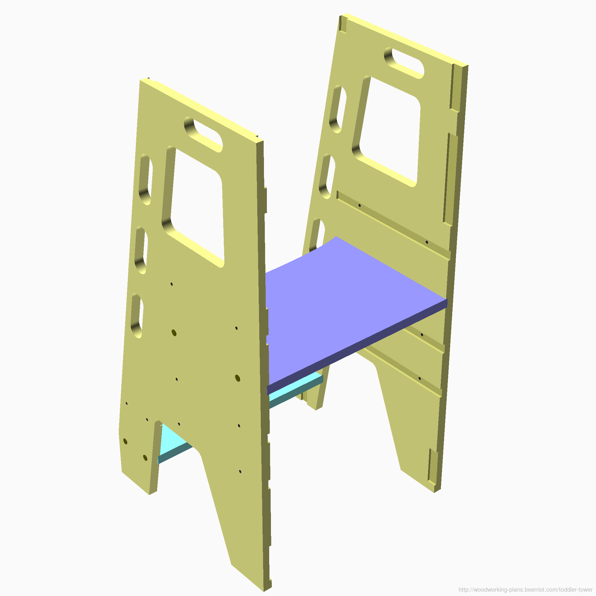
It's easiest to attach the cross-member supports if they can be clamped in place while you work. Luckily, the tower will stand if you install the platform and step now. Turn the threaded inserts into the holes on either end of the platform and front step. Pass bolts through the holes in the lowest step dados, and throught the holes in one of the higher platform dados. Screw the bolts into the threaded inserts, and stand the tower up.
Reminder: if you added the curves to the step and platform, they both face away from the cabinets.
{kind=link}
Working with one cross-member support at a time, place it into its rabbets or grooves and clamp it in place. For the wide and narrow supports, pre-drill a hole for a screw through the side panel and into the cross-member. The hole should be about a centimeter to a centimeter and a half from the top or bottom edge of each support. Choose a distance that looks good to you, and use it on all 18 holes. The safety rail only needs one screw in each end. I recommend the middle of the rail.
Glueing these cross-members in place is not strictly necessary, but it will add some long-term stability to the tower. If that sounds good to you, before driving screws into the holes you just drilled, remove the cross-member, apply glue to its rabbet or groove, and clamp the support back in place.
Be careful when driving the screws. I strongly recommend using a finish washer with each screw, to prevent the wedged head from splitting the wood if it is tightened too far below the surface. Another option would be to use a pan-head screw instead.
Step 10: Test platform adjustment.
{kind=link}
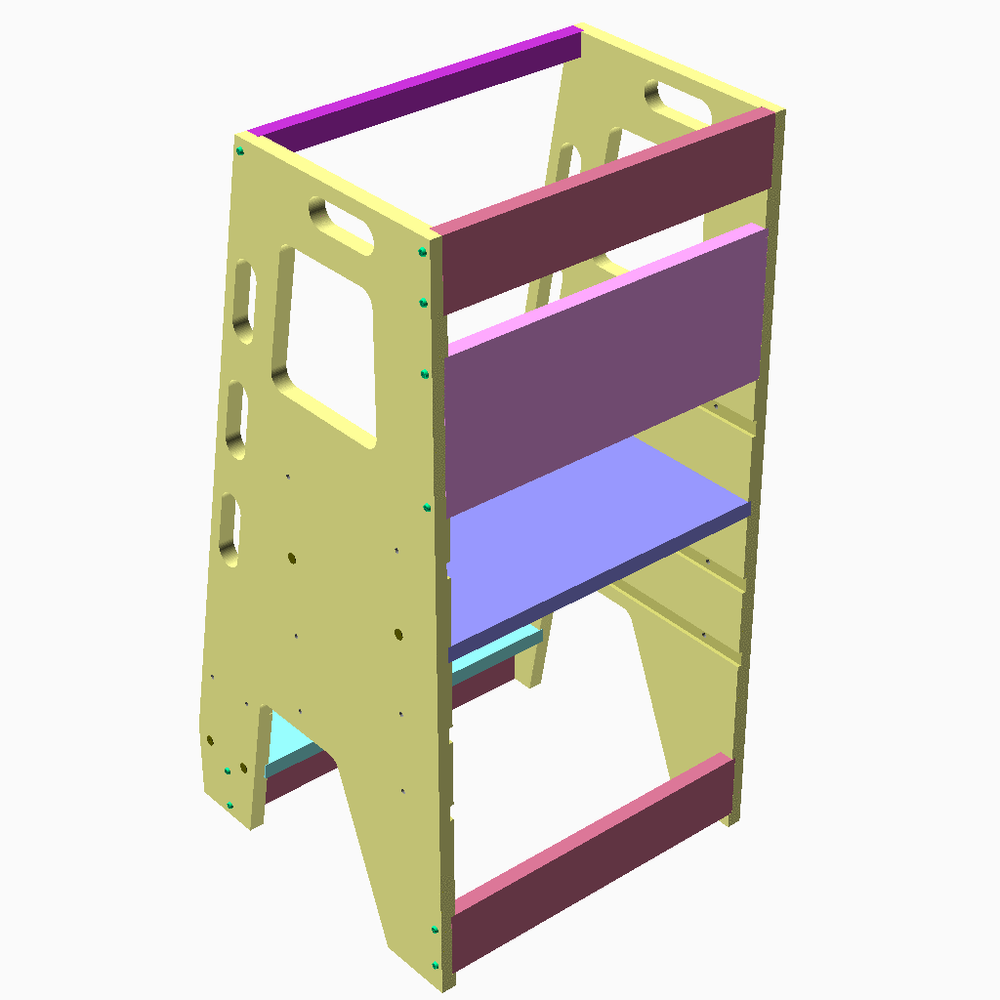
Before painting, or otherwise finishing, try repositioning the platform and the step. They may take a little bit of force to push out of their dados. This may be fine, because you probably won't move them that often. If you would like them to move easier anyway, sand a bit off of the ends. Lightly chamfering the corners that sit in the bottom of the dados can help as well.
When you can successfully reposition your platform and step, your build is complete. It's a good idea to paint or otherwise seal the wood with something that can be wiped off with a damp rag. Remove the platform and the step from the tower while painting, so the paint doesn't "glue" them in place. If your dados are snug, also consider taping off the part of the platform and step that sit inside them, so the paint doesn't make that part thicker.
Enjoy having your kids participate in kitchen activities!
Copyright © 2021 Bryan Fink
 This work is licensed under a Creative Commons Attribution 4.0 International License.
This work is licensed under a Creative Commons Attribution 4.0 International License.